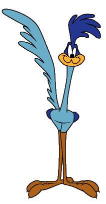

Today’s exercises provide hands-on experience working with multiple linear regression in R, with an emphasis on drawing valid statistical interpretations from your results.
I encourage you to work in teams.
Please submit your responses individually on webcampus. If you worked with a team, please include the names of your team members at the top of your submission.
Reports must be uploaded to Webcampus by the date indicated (see WebCampus).
It is not expected that you will complete the whole process during the class period. Good luck!!

A new bird species has recently been discovered, the Pinyon Roadrunner(Geococcyx fictus). Like its famous cousin the Greater Roadrunner (Geococcyx californianus), this species prefers open country, is predatory on a wide variety of reptiles, insects, arthropods, and rodents; and forages primarily through rapid movements on the ground (or sometimes running in slow motion through the air), continuously vocalizing with its “beep beep” or “hmeep hmeep” call.
The new species occurs in cooler Great Basin environments where the Greater Roadrunner is not found, preferring montane sagebrush communities or sparse woodlands dominated by pinyon pine and juniper tree species. Not much is known yet about the specific habitat requirements of this newly discovered species, although data from recent surveys are available from several scattered mountain ranges where it has been observed to be surprisingly abundant.
You are provided (see file PJRoadRunner.csv) with the following data from 100 site locations where extensive point count surveys were implemented, including roadrunner density (response variable) as well as predictor variables representing topographic, edaphic (soil-related) and woodland vegetation structure:
Of course, this is actually a simulated data set. The true habitat relationships for this species are perfectly known as the parameters in a linear equation used to calculate the abundances.
You should therefore be able to reconstruct the true parameters through a multiple linear equation analysis!
However, some challenges that may make this a nontrivial exercise in regression modeling:
Your group’s assignment is to reconstruct the true parameters of the Pinyon Roadrunner species-habitat relationship, and to outline the process by which you arrived at your result.
Some hints:
car package) to explore possible
multicollinearity, and refit your regression models accordingly.poly() function to add polynomial terms
to a regression model. Alternatively, use the I() operator:
eg, to add a squared term use y ~ x1 + I(x1^2).effects package to easily visualize the
effects of predictor variables modeled from your regression models,
including interaction and polynomial termscoplot() function to generate graphs of
suspected interaction terms empirically (from the data, not from a
modeled relationship)anova() function on multiple, nested models to
statistically test model parsimony using an F-Test or likelihood ratio
test (increase in variance explained vs. number of parameters added).
You could also use the AIC function to calculate AIC coefficients (which
we will cover later in the course).The assignment will be due on the deadline specified in WebCampus.
Your report should include:
– End of exercise 4 —